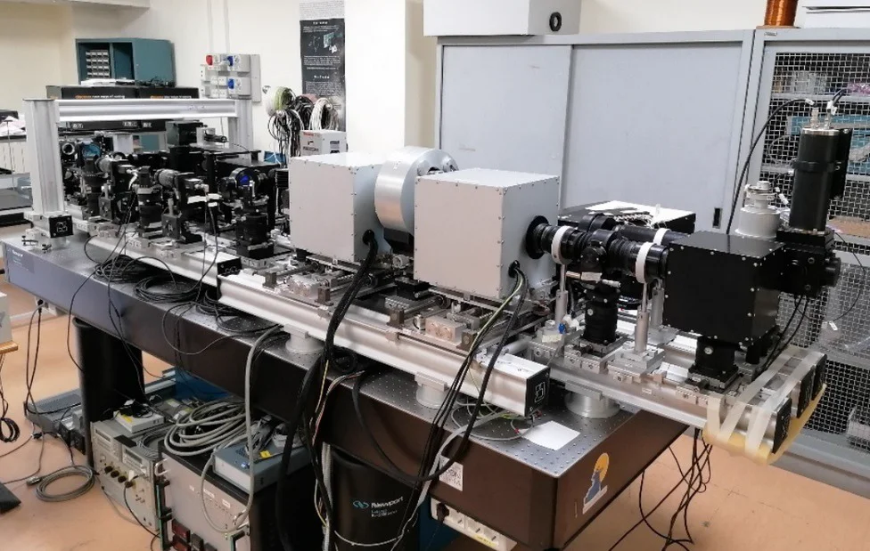
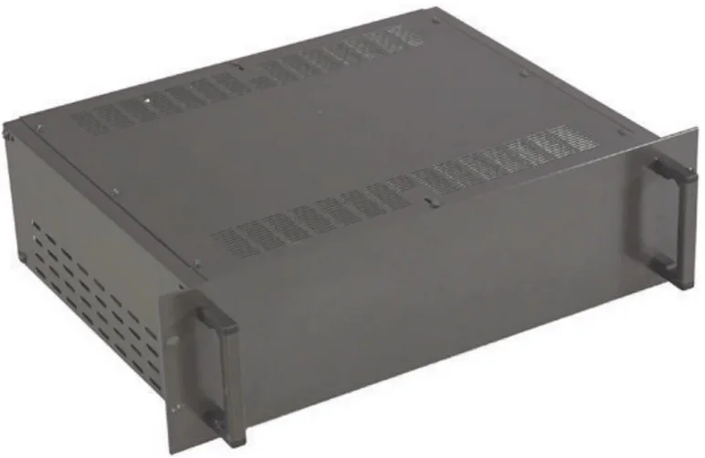

Быстрые четырёхквадрантные ВВ-источники питания с очень низким шумом для ёмкостных нагрузок.
Быстрый четырёхквадрантный ВВ-модуль с очень низким шумом в диапазоне от −700 V до +700 V, испытанный с ёмкостными нагрузками до 25 нФ. Применяется для питания интерферометра Фабри–Перо в новой оптической схеме интерферометрического двумерного спектрометра IBIS 2.0 — инструмента фокальной плоскости, разрабатываемого для получения скоростных спектроскопических и спектрополяриметрических изображений фотосферы и хромосферы Солнца.
Сайт эксперимента IBIS 2.0: ibis20.inaf.it.
Высоковольтный четырёхквадрантный источник питания для быстрых высокоточных пьезоактюаторов.


Рис. 1: IBIS 2.0 в новой оптической конфигурации на оптическом столе лаборатории INAF – Римской астрономической обсерватории.
Пьезоактюаторы обеспечивают точное позиционирование с субнанометровой точностью. Для ряда применений требуются специализированные четырёхквадрантные высоковольтные источники питания. Такие источники способны как отдавать, так и поглощать ток, обеспечивая выходное напряжение от отрицательного до положительного с очень низким шумом и, при необходимости, высокой скоростью нарастания.
I-Conomy специализируется на разработке и производстве передовой заказной электроники по спецификации заказчика. В данном случае источник питания играет ключевую роль, обеспечивая быстрое сканирование частот интерферометра Фабри–Перо (FPI), или эталона, — оптического резонатора из двух параллельных отражающих поверхностей (тонких зеркал). Оптические волны проходят через резонатор только в резонансе с ним. Интерферометр Фабри–Перо — неотъемлемая часть интерферометрического двумерного спектрометра 2.0 (IBIS 2.0).
Если в питании пьезоактюатора присутствует шум, выходная частота становится нестабильной. Поскольку требуется быстрое сканирование выходных частот, изменения напряжения должны происходить за миллисекунды. Интерферометрический двумерный спектрометр 2.0 (IBIS 2.0) — инструмент фокальной плоскости для получения скоростных спектроскопических и спектрополяриметрических изображений фотосферы и хромосферы Солнца.
Ожидается, что IBIS 2.0 обеспечит высокую стабильность спектрополяриметрической съёмки с хорошо воспроизводимыми характеристиками. Это особенно ценно для ряда научных задач, в том числе:
IBIS 2.0 планируется использовать в скоординированных наблюдательных кампаниях вместе с наземными и космическими телескопами, чтобы дополнять возможности других существующих и будущих инструментов для изучения Солнца.
Для выполнения научных требований IBIS 2.0 имеет поле зрения не менее примерно 60” × 60” и пространственное разрешение около 0”,16. Ключевая техническая особенность — большая гибкость спектральной выборки: можно задавать разное число точек вдоль каждой линии и разный шаг. Для каждого сканирования по длине волны предусмотрены два основных режима: последовательное сканирование спектральных линий с одним изображением на каждую спектральную точку и возможность получать несколько изображений в одних и тех же спектральных точках на каждом шаге. Кроме того, необходимо обеспечить возможность регистрировать более одной спектральной линии за сеанс наблюдений — как последовательно, так и повторными сканированиями каждой линии перед переходом к следующей.
В настоящее время эти источники питания применяются в основном на крупных наземных телескопах. Однако проект изначально задумывался с прицелом на применение в космосе. Компоненты выбираются из радиационно стойких, а квалификационные испытания — включая термические, вибрационные и радиационные испытания на уровне модуля — будут проведены в ближайшее время.
IBIS 2.0 будет установлен в обсерватории Роке-де-лос-Мучачос на Канарских островах.

Если нужного напряжения нет в нашем каталоге, мы готовы в короткие сроки и по конкурентной цене предложить вам заказное решение как для наземных, так и для космических применений.
Укажите ваши требования, заполнив форму: